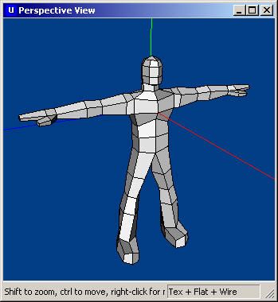
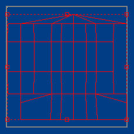
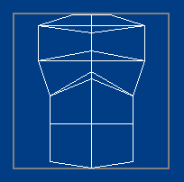
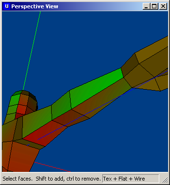
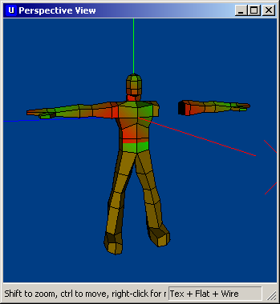
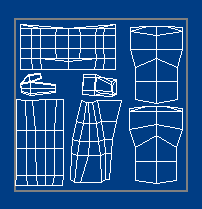
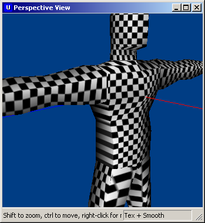
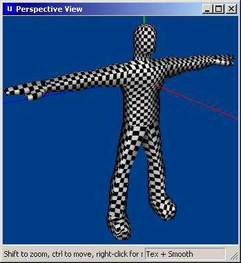

|
Unwrapping a Bipedal Character
by Joseph Hocking see his artwork This tutorial will explain how the tools in Ultimate Unwrap3D can be used to quickly and effectively unwrap a bipedal character model. Note that the terms "UV coordinates" and "texture coordinates" mean the same thing (the UV vertex and edge information that determines where various parts of the texture image appear on the model,) and "unwrapping" and "texture mapping" both refer to the process of assigning these coordinates. Analogous terms are used pretty much at random below. Here's a picture of the model used in this tutorial:  The entire model will be mapped onto one texture using Ultimate Unwrap3D.
We will begin with the head, a relatively standard place to start when texture mapping a humanoid character. The HeadSelect the polygons of the head. Now apply a Cylindrical mapping (by clicking the "Cylindrical Map" button or under the "Tools" menu;) for humans, the head approximates a cylinder (except for specific features like the ears.) Note that you will need to set the mapping to the appropriate axis in the box that pops up. In all likelihood, you will want the Y axis; this achieves a mapping that wraps around a vertical cylinder: More often than not, the head will not be unwrapped correctly the first try due to the placement of the seam. In a cylindrical mapping, the UVs must be split vertically in order to lay them out flat. A seam results where this split occurs. While you should strive to minimize and/or completely camoflage such seams when you create the texture image, it will be helpful for the seam to be placed in a relatively unimportant place. In this case, the default cylindrical mapping placed the seam (a VERY important place) whereas a better place for the seam would be the back of the head (less important.)
To control the placement of the seam, adjust the "Seam Rotation" parameter in the box that pops up when you apply the mapping:
While it wasn't strictly necessary in this case,
here is a temporary texture applied to the model in order to highlight
the seam: TorsoWhereas the head was mapped as a cylinder, the torso is generally best mapped as two planes, front and back.Select all the polygons on the front half of the torso, and hit the "One Sided Planar Map" button. In the window that pops up, make sure to choose the axis perpendicular to the desired plane (in this case the X axis:)  As with the head, move the UVs out of the working space. Now select all the polygons of the back half, set another planar map, and move those UVs aside as well. LimbsThe limbs ie. arms and legs are basically cylinders, so cylindrical mapping is the obvious approach. Select the polygons in one arm (make sure NOT to select any part of the hand as the hand is not part of the cylinder,) and apply cylindrical mapping. As with the head, use the "Seam Rotation" parameter to move the mapping seam to a relatively unimportant place such as the side facing the body:
As pointed out, the ends of the arms and legs ie.
the hands and feet are not cylindrical as with the rest of their
respective limbs. Map the hands and feet with planar mappings like the
torso.

Now that a mirrored arm has been created, select the
polygons in the new arm and, using "Move" under "Faces" when you
right-click in the Preview window, move the new arm into place.
Finally, select "Weld Model" under "Tools" to fuse the new arm onto the
model. That the fusing happened correctly can be verified by setting
the Preview window to "Smooth Shaded;" there should not be a visible
seam where the arm joins the body. If a seam is apparent, you must move
the new arm some more so that it fits exactly (ie. the vertices at the
end of the arm overlap the vertices of the hole in the body,) and then
weld the model again. You will probably also need to increase the
"Tolerance" value in the window that pops up; I generally use 0.01. Texture TetrisOnce all the parts of the body have been unwrapped you must make all the texture coordinates fit in the grey square. If you've been doing it correctly, all the UVs are outside of the grey square, out of the working space. This square represents the dimensions of the texture image, so now you must put them back into the square in order for the texture image to be applied correctly to the model.However, there are a couple caveats. One, when moving UVs back into the square, you must make sure none overlap (each part of the model needs its own unique part of the texture image.) Two, you must make sure as much of the square is used as possible. Thus, a Tetris game results as you attempt, by scaling, rotating, and moving the UVs, to pack all the various shapes as tightly as possible. Here is an example of the UV coordinates after going through this process:
 CleanupAt this point the texture mapping is almost done. However, there is probably warping and stretching in the texture coordinates and you'll want to root out such errors before painting a texture.Assign a material to the model (if you have not already done so,) and set the material's Diffuse Map to Checker. You'll probably want to increase the tiling of the checkered map (I use 20 by 20) in order to make the checkered squares small enough to be effective. Anywhere the checkers don't appear square (stretched out to a rectangle, etc.) there is an error you should correct. Correcting errors generally requires moving vertices around in the main editor window (make sure to switch to "Select by Vertex.") For example, the planar mappings applied to the torso usually result in stretching on the sides of the body:  To correct this, you must select the vertices along the side of the torso and move them out to apportion more space on the texture image. Other errors are corrected in a similar manner; select vertices around the error and move those vertices to adjust the mapping. Once you have corrected all the errors, the checkered pattern on the model will look even and uniform: 
Now you're done unwrapping the model. Export the UV map and you're ready to start painting the texture. |